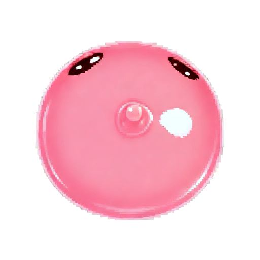
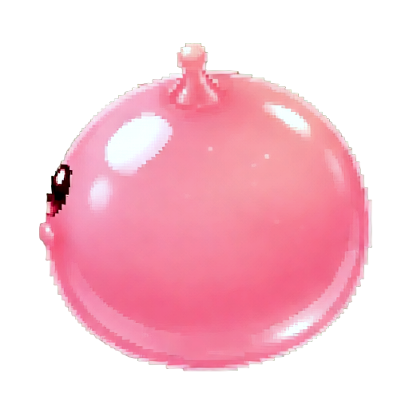
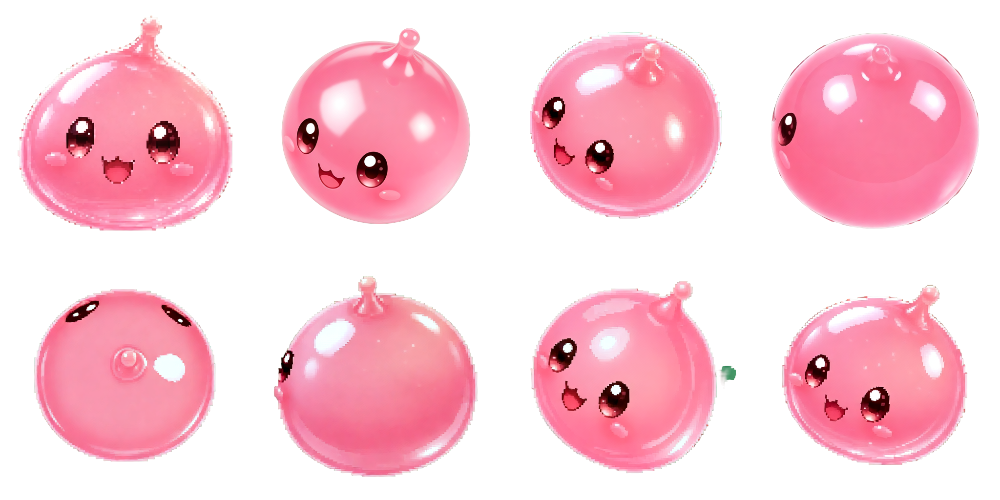
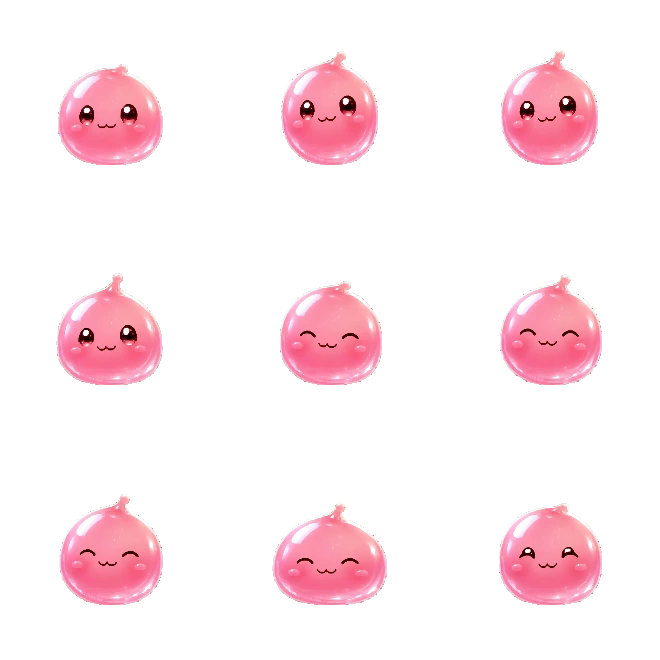

Same Origin-gloss Poring, 8 camera angles at 30° elevation, then a 9-frame idle bounce. Walk pose grew arms — Ludo guessed a biped. Rotations stay a blob.
0° front45° front-right90° right135° back-right

180° back

−135° back-left−90° left−45° front-left

8 dirs — S / SE / E / NE / N / NW / W / SW

idle bounce — 9 framesidle.gifgeneratePose Walk — invented legs